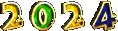
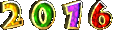
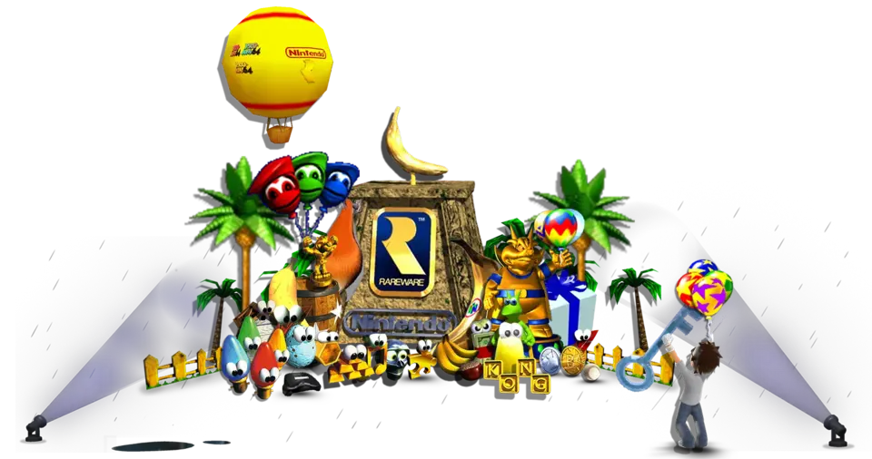

Timeline
Everything since 2015, newest first: the patches, the preservation uploads, and the experiments in between. Project names link where there is something to see.
- Made this projects page
- Archived Manhunt: The Search for Sickamore - .WAV rip from CD
- Researching website archiving - stay tuned...
- Xbox 360 Homebrew Implementation of Ninja Gaiden (2004) Hurricane Packs
- iQue Player Research
- Made an account here the day after ^

- Experimenting with Animal Crossing memory card tools
- Celebrated the lifetime and closure of the Xbox 360 Marketplace
- Sideloading Infinity Blade
- Began uploading "Manhunt: The Search for Sickamore" mp3 rips
- Satellaview archiving
- Released "Legalize Melee" modpack
- Archived Dairantou Smash Bros DX Gold Disc
- Improved video editing skills
- First original upload to the Internet Archive - Ninja Gaiden 2004 Japanese Demo Disc
- Learned OG Xbox Homebrew
- Learned how to make custom N64 boxart
- Made "The Legend of Zelda: The Ocarina of Time with Triforce% Quest" custom box art
- Researched SSBM modding updates
- Wrote first speedrunning guide – for Touhou Luna Nights
- Learned how to run a modded Halo: Combat Evolved server
- DIO Doom Mod — Anime Voice ver. 2
- DIO Doom Mod — Taunt and Music addons
- Made a tutorial on jailbreaking your Wii

- Researched Super Smash Bros. Melee modding
- Researched Super Smash Bros. Brawl modding
